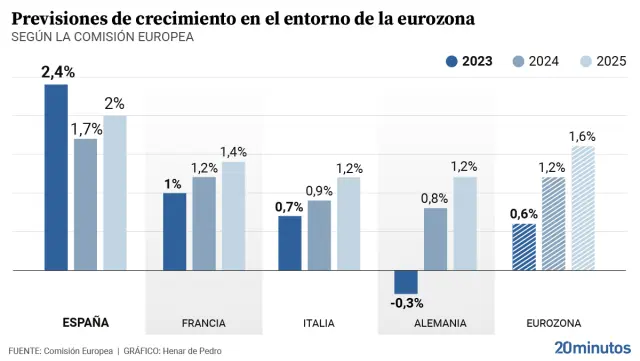

La Fed mantiene las tasas de interés: impacto en los mercados emergentes
La Reserva Federal de EE.UU. decidió mantener las tasas en el 5.5% mientras analiza nuevos datos de inflación. Expertos advierten efectos en economías emergentes.
La Reserva Federal de EE.UU. decidió mantener las tasas en el 5.5% mientras analiza nuevos datos de inflación. Expertos advierten efectos en economías emergentes.
Los últimos datos del PIB muestran una contracción del 0.2% en el segundo trimestre, generando preocupación sobre una posible recesión técnica.
El barril de Brent superó los $90 tras nuevos conflictos en la región. La OPEP+ considera recortes adicionales de producción.
Los inversores buscan activos seguros frente a las tensiones entre China y Taiwán, impulsando estas divisas.

Nuevo estudio del FMI prevé que el 40% de los trabajos podrían verse afectados por la inteligencia artificial.
Meta y Alphabet superan expectativas, mientras Amazon decepciona. Cómo reaccionan los mercados.